How to play
The tutorial
New to the game? Tap Tutorial on the menu, next to Practice alone. It is a short shift of about eight minutes on Heron, on your own phone: you are the Station Engineer, nobody else is aboard, no trouble comes and you never get hungry or tired. A coach under the top bar gives one instruction at a time, marks the tile to walk to with an arrow and lights the button to press, and moves on when you have done it. Skip tutorial leaves at any time.
- Walk with the joystick to a marked tile.
- Walk into a door to open it and read the room's name in the top bar.
- Pick up an item with the hand button, drop it, pick it up again and put it in your bag.
- Open Gear and see that your hard hat is on.
- Read the power monitor: a console shows its data only while you stand at it.
- Find the problem on the console: a room shown red is cut off from power, then pry its dead door open with the crowbar from your belt.
- Take the cable coil from your belt, lay cable over the cut in the tunnel and watch the lights come back.
- Mend a cracked hull wall: a hull plate from your bag and the welder from your belt, then Patch crack.
- Read the air alarm of the room you repaired.
- Take a ration pack from the machine and eat it.
- Sit on a stool, then stand up again.
- Tap Leave to finish; a card says what to try next (a job, or Join shift with a crew).
The shift
Everyone meets in the lobby and picks a job. Once 4 people are there, a short countdown starts and the shift begins: 25 minutes to keep the station running. Trouble strikes during the shift: 2 incidents plus one for every 3 people, the first after 90 seconds, none in the last 3 minutes. When the time is up the crew votes whether to go on or end the shift (see The end of the shift below); then a summary shows how the station did and who did what, and the next shift starts after a short break.
Do not want to wait for the countdown (90 seconds)? Tap Ready once you have picked a job; tap again to cancel. When everyone in the lobby is ready, the shift starts in 5 seconds instead. The lobby shows how many are ready, such as 3/5. In Practice alone there is nobody to wait for: Start now starts the shift at once, and from there it is the same shift as any other, with a crew of one. Someone arriving in a shift that is already running simply picks a job and joins.
Jobs the station needs
The lobby marks no job card by itself. During a shift the Station Master or the Registrar may mark the jobs the station needs: at the ID console, tap a Mark as a priority row (tap Clear the priority mark to take it back). It needs a command card, worn or in the other hand.
A marked job's card says "prioritized" in the lobby. The marks are shown to people who join the shift late and in the next lobby, and are cleared when the next shift starts. A job with no workplace on the next map is not marked.
Station Engineers aboard
The power plant's parts wear more often the more Station Engineers are aboard: 0.6 times the usual with none, 1 with one, 1.3 with two and 1.6 with three or more. This replaces the crew size for the power plant's wear; the hull and the pipes still wear faster with a bigger crew.
While no Station Engineer is aboard, the engineering doors open to everyone: the access check is dropped for them, on every map. As soon as an Engineer joins the shift they ask for the engineering card again.
Choosing the map
A server that is not pinned to one map plays Heron Station, Millrace Station and Cairn Station. While the lobby waits, every player taps the map they want on the row of map buttons (tap it again to take the vote back); the lobby shows each map's votes and which one is leading. When the shift starts the map with the most votes is played; a tie, or no vote at all, goes to the map played last (Heron before the first shift). The phone then loads the map by itself and keeps its place and job. Practice alone shows the same row of maps in its own lobby: your tap chooses (it opens on the map of your last Practice, remembered) and the tutorial has no vote and is always on Heron.
A job only has a workplace where the map has a room for it. On a map without one the job's card says "No workplace" and is not offered; somebody who had picked it is a Hand there, and gets the pick back if the vote moves to a map that has the room. The Hand always has a place. The lobby lists, for each map, the jobs that have no workplace on it.
The end of the shift
When the shift time (25 minutes) is up the shift does not end: a vote opens on every phone for 30 seconds, a big prompt with two buttons, Continue and End. Everyone online votes, the living and the dead; people who do not answer are not counted, and the vote closes at once when all have answered. If End has more votes than Continue, the shift ends (on this station, by the crew-transfer shuttle); a tie, or Continue ahead, adds 10 minutes and the vote comes again when they are over. No new trouble strikes while people vote or once the shuttle is called.
The call is announced to everyone. The shuttle arrives after 2 minutes and docks at the Main Airlock and Docking Port, where its door, bolted until then, opens; it waits there 90 seconds. Walk in and sit in one of its 16 strap seats (the Sit button): when everyone who is alive sits it leaves after 5 seconds, otherwise when the time is up. Then its door is sealed, and anyone not in a seat is put out on the dock and stays behind, as do the dead. The shuttle travels for 3 minutes, with its passengers in their seats, and then the shift ends: the summary lists who got home and who was left behind or died, and the round log records the votes and who escaped.
Joining late (#93): Ready and Start now exist only in the lobby. Someone who arrives after the shift has started sees "Shift in progress" with the job cards and a Join the shift button (every job is always open). They arrive on the crew-transfer shuttle: it is shown docked at the Main Airlock and Docking Port with its door open, they sit strapped in one of its seats and, after 10 seconds, are let go to walk out; the door stays open 15 seconds longer. While the end-of-shift vote is open or the shuttle is called nobody can join: they wait for the next shift.
Practice alone is the same shift with a crew of one: the same length, events, vote, departure and summary. It runs on your phone, on the map you chose, and does not wait for anybody else to start.
Rules of play: story roles and consent
Story roles are rare, optional scenes: a crew member may be offered a private role with a few goals that make trouble for others to sort out. They are off until the owner of the server turns them on, and every player chooses for themselves.
The lobby has two switches, both off until you turn them on: Offer me a story role, and I may be part of others' stories. Your choice is private and is remembered on your phone.
Nobody is offered a role with fewer than 6 people aboard; from there one role for every 8 people. There is none in the tutorial or in a shift without trouble. The server draws once, 3 minutes into the shift, by the shift's own seed: pay, rank and playtime never change the draw. The Station Master, the Registrar, the Watch Officers, the Advocate and anyone who joined late are never drawn.
The offer is a private card: Accept or Decline within 60 seconds. Declining has no penalty, and the card is offered to one other person at most. Whoever holds a role may Stand down at any time.
A story only touches people who opted in. The server refuses every harm of a story role against someone who did not, and writes the refusal down. Harm is a stun or a blinding, never a wound: at most 2 on one person and 4 in all, 5 minutes apart. A red alert does not switch these limits off.
Anyone may tap Enough on the Story card to leave every story for the rest of the shift. A role that had named you as its target is only told that the target is no longer available.
Anyone may report a player from the Story card, for harassment, griefing, stalling or another reason. Reports go to the shift's log for the server's owner.
The Watch acts on Station Law, not on the story: a lawful arrest needs nobody's consent and the story's limits do not apply to it.
At the end of the shift the summary adds a Story card: who held a role, how each goal went and how it ended. A story never ends the shift.
The Runner, the Organiser and the Forger
The Runner is a story role: a smuggler. A few crates that look like any other are marked in secret. The Runner pulls or carts them from where they stand (the Stores Bay or the Mining Dock where the map has one) to the drop point, a room named on the private card, and lets them stand there for 15 seconds: then they are collected. 3 must get there; one more is marked as a spare. Nobody is hurt by it.
The Watch (a Watch or command card) can Inspect a crate beside them, a job of 6 seconds: a marked crate shows a contraband seal, any other is found in order. A found seal is evidence under Station Law (contraband); the Runner has lost that crate. An Order form clipped to a crate is its manifest (4 seconds); one that carries the Stores stamp lets a crate pass its first inspection only. Everybody who takes hold of a crate leaves a fingerprint on it, and the cameras see who hauls it.
The Organiser is a story role: a rabble-rouser with a Pledge banner. Anyone but the Station Master, the Registrar and the Watch may Sign the pledge when they stand beside it: it says what it does, the people near see the signing, the list can be read, and Take my name off undoes it at any time. The Organiser prints a Pledge list from the banner and must get it, with enough names (about half of those who could sign, two to six), to the Station Master's or the Registrar's office in time (15 minutes at most): fax it, or put it in the cabinet. The pledge's words are fixed; the Station Master may answer it or not, and a petition made in good faith is never an offence.
The Forger is a story role: an infiltrator of the audit office. Paper is the weapon. At an office desk the Forger writes a Request or a Report like anyone, then taps Forge it to put another crew member's name on its From line; that person must have opted in to the story. A forged paper leaves the Forger's fingerprint at the desk, and gloves leave none.
The Forger's first goal is a false charge against a named person: a forged Report about them on Theft or Contraband must lie in the Watch Office or the Advocate's Chambers, and the Watch stamp the card issued, which is not station issue, must lie in the room where they work. The second goal is two forged Requests that somebody else approves with the Stores stamp or the Station Master's stamp.
The Advocate may Strike a Report: it is written on the paper and in the record, and a struck false charge costs the Forger that goal for the shift.
The Low-Tide agent is a story role: a saboteur from a rival station who wants the relay slower. The agent uses only what any crew member can do: cut a cable, switch a room panel off, close a valve or stop a pump, switch a robot off. Nothing is announced: the Engineer finds a fault at a console (the power monitor, the atmos console, the crew monitor or the robots list) and mends it like any other.
The server keeps the rules: no fault before minute 5, at most 3 standing at once, no cut that would darken the station, and never a fire, a breach or a deadly gas. A touch leaves a fingerprint unless gloves are worn, and the cameras see who stood there.
The Low-Tide agent wins with 3 faults each left standing for 4 minutes, or with the main battery under 40 percent at the 20 minute mark. The end card names every fault afterwards.
The Patch carrier is a story role: a person with a patch card, not an AI. A bad firmware drift is loose in the robots and the carrier spreads it: beside a robot, or with the robot fabricator in reach for a robot standing near it, the carrier loads the patch (8 seconds).
A drifting robot shows firmware: drifting on the robots list (the Scientist's console and the robot's own menu) and goes wrong at its own job, never harmfully: a medibot ignores the most hurt patient, an electricianbot leaves a cut cable, a constructionbot is slow to seal a crack, and a securibot may handcuff someone who is not wanted; the Watch takes the cuffs off. Nobody is hurt.
Anybody beside a drifting robot with a screwdriver can Reflash it (20 seconds, half of that for a Scientist). The server keeps the rules: no patch before minute 5, at most 2 robots drifting at once.
The Patch carrier wins with a drift that ran for 5 minutes without being reflashed. The end card names every robot afterwards.
No role here harms anyone. Like every story role they can Stand down, tap Enough or be reported, and the end card says win, lose or draw for each: the Runner wins with the crates delivered and a free hand, the Organiser with the list filed, the Forger with a false charge that stood or two forged Requests approved.


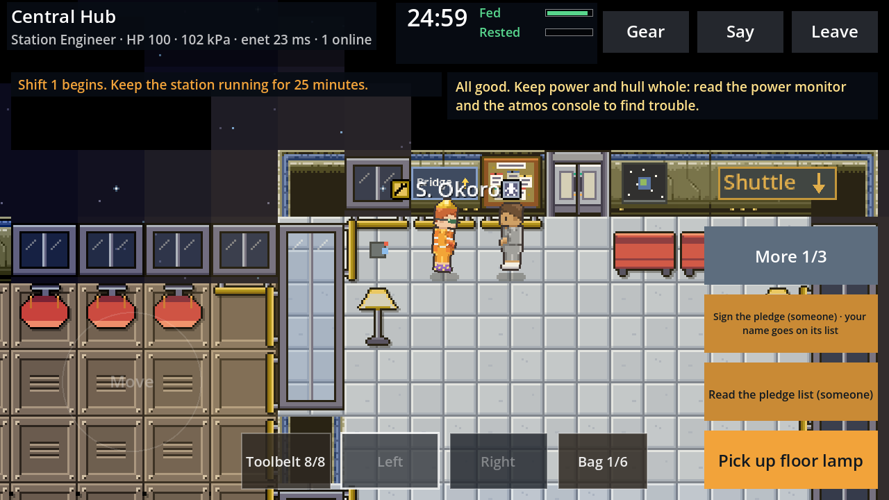
The three objectives
- Station intact: at least 80% of the rooms have power and on average 80 kPa of air or more.
- Nobody dies.
- The power never fails. Keep the arrays, the battery bank and the inverters running: a dark station is a lost station.
Controls
- Move: put your left thumb anywhere on the left half of the screen and slide.
- Act: the orange buttons on the right offer what you can do here with what you hold, the most useful at the bottom.
- Hands: two at the bottom; the outlined one is in use. Tap the other to switch.
- Belt: the Belt button beside the hands (8 on a toolbelt, 6 on a medical belt, 6 on a watch belt, 5 on a caretaker belt, 6 on a miner belt and 8 on a seed pouch) lists what the belt you wear holds. Tap an item to take it into the hand in use, or Put in to stow what that hand holds; only what the belt is made for goes on it. When the hand in use holds something else, the item comes out into your other hand, if it is free. The list stays open until you tap outside it.
- Backpack: the Bag button beside the hands lists what is in it (up to 6 things). Putting in is quick; taking out takes 1 s.
- Gear, at the top, shows what you wear and hold, a box per slot as in classic SS13, but with no shoes (nobody wears any). Tap Belt, Back, Suit, Head, Gloves, Mask, Glasses or ID to take off what is there into a free hand, or to put on the belt, backpack, EVA suit, apron or vest, EVA helmet or Chef's hat, gloves, mask, goggles or ID card in either hand (pick one up first); what is in it stays in it, also when it falls, and the box says how full it is. Pocket 1 and Pocket 2 and, while a suit is worn, Suit storage swap with the hand in use like a belt slot. Tap a hand to use it. The panel stays open while you change things, with the hands and the Belt and Bag buttons below it still at hand; tap elsewhere to close it.
- Suit sensors: tap Uniform in Gear to set what the crew monitor in the infirmary shows of you: off, alive or dead, vitals, vitals and position. Suits start at "alive or dead"; Medical Doctors will ask for more.
- Say: ready-made lines for your job and room, or the keyboard. Near reaches people within 9 tiles, Radio everyone on the station.
- The yellow line at the top right says what would help most right now.
- On a Mac: arrows or WASD move, Space or E acts, 1-4 pick an action, Q switches hands, Z/X/C/V use belt slots 1-4, N opens the belt, B opens the backpack, G opens Gear.
Air and health
- Normal air is 101 kPa. Below 50 kPa there is not enough to breathe: 6 health a second, unless an air tank is in your EVA suit's storage (it empties as you breathe).
- Below 20 kPa the body is crushed too: 8 health a second more, unless you wear the EVA suit and helmet together.
- Below 50 kPa there is not enough to breathe. An air tank spares your lungs only in the storage of a worn EVA suit (Suit storage in Gear): one in a hand, a pocket, on a belt or in your backpack gives nothing. It empties as you breathe.
- Below 20 kPa the body is crushed as well. Only the full EVA gear stops that: an EVA suit and an EVA helmet, both worn. Sealed in them you take no damage in vacuum as long as an air tank is in the suit's storage; sealed without a tank you still suffocate, and a tank without the suit and helmet does not save you from the crush.
- An EVA suit's storage holds an air tank: hold the tank and put it in suit storage. Two pockets hold one small thing each: air tank, air tank (3/4), air tank (1/2), air tank (1/4), air tank (empty), wire cutters, screwdriver, multitool, t-ray scanner, stores stamp, order form, station master stamp, registrar stamp, watch stamp, law stamp, medical stamp, science stamp, stamped form, cold medicine, wheat seeds, tomato seeds, bean seeds, ration pack, potato seeds, rice seeds, corn seeds, carrot seeds, onion seeds, apple seeds, mushroom spores, beet seeds, health analyzer, flashlight, candle, lockout tag, thickness gauge, pen, bandage, burn ointment, antitoxin pill, epinephrine pen, morphine syringe, flu antiviral, antibiotic pill and pepper spray. A kit, a plate, a belt or an ID card does not fit a pocket.
- Every room's air is made of four gases: O2, N2, CO2 and one hazard, ember gas (it is toxic, and one day it will burn), at one temperature. Gas moves with the air through open doors and holes: a room that leaks takes its mix with it, a neighbour that gains air gains its gases.
- People breathe O2 out as CO2. A room with power runs a scrubber that takes CO2 and ember gas out and vents that blow fresh air in; a room without power cannot, so its CO2 builds up slowly (about ten minutes to 3 percent in a small room with nobody scrubbing).
- Each room has an air alarm, a small box on the wall. Tap it to read the pressure, the temperature, each gas as a bar and the state of the air: OK, WARN or DANGER. WARN is below 80 kPa or above 125, O2 below 16 percent, CO2 above 3 percent, ember gas above 0.5 percent, above 320 K or below 270 K; DANGER is below 60 kPa or above 140, O2 below 10 percent, CO2 above 8 percent, ember gas above 3 percent, above 360 K or below 250 K. A state goes up at once and comes down only after 20 seconds of better air, so it does not flicker.
- Anyone can read an alarm. Its modes are for a station engineer (their ID card has mechanical access): Normal, Scrub, Panic, Fill, Cycle and Off. Normal keeps the room at 101 kPa and scrubs CO2 and ember gas; Scrub scrubs hard; Panic siphons all the air out and shuts the vents; Fill pours fresh air in; Cycle is Panic until the room is nearly empty (below 10 kPa) and then Normal, our way to replace the air; Off does nothing. A Panic nobody holds falls back to Normal after 60 seconds in a nearly empty room.
- A room with a hole in its wall is held in Panic by its alarm until the hole is patched: its vents stay shut, its state is DANGER and nobody can change its mode. The pressure lock closes the doors as before.
- The atmos console in Air Works lists every room with an alarm, the worst first (red DANGER, amber WARN, green OK, grey without power), with what is wrong. Tap a room for its card. Any engineer can send a room Panic or Normal from the console, and "Panic all red rooms" at once (it cools down for 10 seconds); everything finer, such as scrubbing or filling, is done at the room's alarm in person. Nothing goes out on the radio: alarms and the console are the only way the station tells.
- Heron's air comes through pipes. In Air Works four tanks (O2, N2, a CO2 store and an ember-gas store), a mixer, a waste processor and a burner feed two lines: the supply line, which the mixer fills from the O2 and N2 tanks (the O2 share is a preset: 21 percent, 18 percent, 25 percent or 30 percent) and which ends in a vent in every room, and the waste line, which every room's scrubber fills and which the waste processor empties into the CO2 and ember-gas stores (the burner burns the ember-gas store down). A room's air alarm works its own vents and scrubbers: Normal and Scrub refill and scrub it, Panic siphons the room into the waste line and shuts the vents, Fill opens the vents wide, Off stops them. A room with no vent keeps the old refill. Kestrel has no pipes.
- The room is laid out in the order of the gas: the four tanks stand in a row along the north wall (the waste pair west of the door, the supply pair east of it; a colour band on each shows the gas: O2 blue-white, N2 grey, CO2 and ember gas brown), the mixer, pump and valve follow the supply line to the west door, the filter, processor and burner follow the waste line from it, and the console, the old tank filler, the manifold and the cylinder port stand by the north door. With empty hands tap any of them (a tank, the mixer, the waste processor, the burner, a pump, a valve, a filter, the filler, the manifold, the cylinder port, the console): a short list says what it is, the level of a tank, what it is connected to and what an engineer does with it, with the machine's own buttons below.
- The plant is built; you repair it, you never route a network. Pipes in the crawlways and in Air Works lie open: a wrench (3 seconds) loosens or secures one, wire cutters (2 seconds) cut one. A loose pipe leaks what the line holds into the room it lies in (the room's air alarm reports it, a loose waste pipe draws air out); a cut pipe leaves a gap and splits the line there. Pipes under a hallway's or a department's floor tiles are hidden until a crowbar lifts the tile, and show on a T-ray scanner in green. A Station Engineer fills a gap with a pipe from the lathe (Lay pipe, 4 seconds), and mends a broken vent, scrubber, pump or valve (it wears a red cross) with its kit.
- The atmos console's Network tab lists the four tanks, the supply and waste pressure, the mixer, every pump (off, low, mid, high), valve (open, closed) and filter (the gas it pulls out of the line) with one tap each, and the leaks and broken machines by room, not by tile: look for the pipe with a T-ray scanner. An engineer may also set a machine beside it. Nothing is announced on the radio or the HUD.
- Now and then the plant wears: an ember leak feeds ember gas through one vent into its room for 4 minutes (the room's alarm warns as it builds; Scrub or Off stops the worst), a pipe works loose, a pump, valve, vent or scrubber breaks. It is slow, never sudden, and never announced.
- In Air Works the tank charging manifold sits beside the old hand filler. A wrench (3 seconds) hooks its hose to the plant's supply line, or unhooks it. With the hose hooked, tap Charge the worn tank, Charge the tank in hand or Charge both tanks (5 seconds): the tanks come up full and the air comes out of the plant's O2 and N2 stores, at the mixer's O2 share (about 400 moles for an empty tank, less for a part-full one). It needs the room's power and a live supply line, and it stops when a store is empty; the hand filler stays as the backup and takes nothing.
- The stores run down: the plant breathes through them all shift, and on a quiet Heron the N2 store is empty after about fourteen minutes. Stores sells cylinders of O2 and N2 (10 points each). Carry one to the gas cylinder port in Air Works with a wrench in the other hand and tap Wrench the cylinder onto the port (4 seconds): it empties 30000 moles into its store in 20 seconds. The empty cylinder lies beside the port: put it back on the delivery pad and Ship it for 2 points.
- In the Construction Workshop the scrap press takes a failed part: the dead battery cell or the failed inverter module a swap leaves, the cracked solar panel taken down off the truss, a spare pipe piece. Hold it and tap Press (6 seconds): half the plates the lathe took for it come out beside the press (a cell or a module 1, a panel 2, a pipe 1). It needs the room's power.
- The hull survey board beside it lists the outer walls by room, never by tile: how many are worn, cracked or breached. Any engineer's card reads it. It tells where to look; the thickness gauge, the stain and the mist show which wall.
- Gloves, a mask and glasses are worn in Gear (Gloves, Mask, Glasses): hold the item and tap its slot, tap it again to take it off into a free hand. Insulated gloves, budget gloves (and the torn gloves they become), latex gloves, a sterile mask and welding goggles are what there is. The dead drop them. Everyone who can see you sees them on your sprite, with your toolbelt or medical belt: a belt line with a pouch at the waist, coloured gloves on the hands, the mask over the lower face and the goggles over the eyes.
- Electric shock: cutting a cable that a source feeds, or cutting or pulsing a wire of a door with power, shocks anyone without insulated gloves for 20 damage and numbs their arms for 2 seconds: no steps, no work, and a note says why. The Station Engineer starts in insulated gloves, which last the whole shift. Budget gloves spare ONE shock and tear on it into torn gloves, which spare none. Mending a wire, laying cable and building take no gloves. Throwing a breaker without insulated gloves strikes an arc (35 damage, stunned 4 seconds), and working on the transformer's core while it is live is worse (65 damage).
- Welding: cutting the hull open and welding a plate over a breach burn the eyes of a welder without welding goggles (the EVA helmet's visor also protects). The sight narrows and darkens at the edges until the end of the shift; only eye surgery would cure it, and the station has no surgery table yet. The Station Engineer starts in goggles.
- Doctors: treating or reviving someone risks catching a disease from them, 40 percent for each of latex gloves and a sterile mask that the doctor does not wear when the patient is sick, 8 percent when the patient is well. The Medical Doctor starts in both; spares are in the Infirmary closet.
- Light: a flashlight (5 tiles) and a candle (2 tiles) are lights you switch with Light on / Light off or Light candle / Snuff candle. A lit one shows a glow round it to everyone who sees it. A room or tunnel without power is drawn dark; the tiles in a light's reach (and in its line of sight: a wall stops the light) are lifted out of the dark and stay readable. A flashlight shines while held in a hand or clipped in a pocket; a candle (out in a pocket) keeps burning wherever it is put down (floor, table, rack). Neither burns down. The light is only what you see: it changes nothing for the others' sight, and a lit light is told to nobody who cannot see it.
- Fire extinguisher: Spray puts out a short harmless mist in front of you, seen by everyone in view. It puts out nothing yet: fires arrive with the air works' next stage.
- Crawlways: every pocket has one to three racks, lockers and storage crates with different things in them (flashlights, candles, extinguishers, budget gloves, books, cable coils, plates, tools). There is no loose scenery there.
- Radiation belt: at most once in a shift of the normal length (on a map with crawlways), at a random moment after the first 4 minutes. Time added by a Continue vote may bring another, never within 8 minutes of the last one.
- The station announces a radiation belt 40 seconds ahead. For 60 to 90 seconds after that, whoever is not in a crawlway pocket loses 3 health every 3 seconds (the truss outside is not a shelter; the EVA pods are); the whole EVA suit, suit and helmet, halves it. The doors into the tunnels blink orange and open to everyone from the warning on, powered or not, so anyone can take shelter. Unsheltered, the belt hurts like a breached room at a seventh of its rate. The station announces when the belt has cleared; 120 seconds later the tunnel doors go back to their usual access. The belt also wears a few hull walls a little.
- Door colours: a coloured band on a door says whose it is. Orange is engineering, light blue infirmary, dark blue the bridge and command, purple science, red watch, yellow stores, white the kitchen, green botanics and brown the bar; grey is open to everyone; yellow and black stripes mark a door that leads into the crawlways or that only a maintenance card (the Caretaker's) opens. The colour shows the access that opens it: a card without that level does not.
- Blinds: the windows of private rooms (the command offices and berths, the crew quarters, the restrooms, the infirmary, surgery and morgue, the Advocate's chambers) have blinds. Stand inside the room beside the window and tap Close the blinds or Open the blinds. It is a cord pulled by hand and needs no power. Shut blinds stop sight both ways, for people and cameras alike, and everyone sees how they hang. A restroom's blinds start shut; holding cells have none, so that the Watch can see in.
- A private meeting: with the blinds of the Advocate's Chambers shut, nobody outside hears what is said inside, and those inside do not hear the hall. The radio still carries what is said into it.
- Two mild diseases go round the crew: a cold (4 minutes) and the flu (7 minutes). Nobody dies of them. The sick sneeze every 8 to 20 seconds, walk slower (a step takes 6 ticks with a cold and 7 with the flu, instead of 5) and need 125 (cold) or 150 (flu) percent of the time for work.
- It spreads by close contact: standing beside someone sick (4 percent a second), and their sneezes, which reach 2 tiles (30 percent each). A sterile mask on you cuts the chance to 35 percent, gloves to 70 percent, and a mask on the sick one to 50 percent. A few of the crew may start a shift already ill.
- It passes by itself, and sooner with cold medicine from the Infirmary (30 seconds left once taken). Afterwards you are immune for 5 minutes.
- Washing helps: at a sink (the restroom's, the surgery's basin) tap Wash hands (5 seconds of work). For the next 4 minutes the chance that you catch it is 50 percent of what it was, and a doctor's chance of catching it from a patient shrinks the same way. Only you know your hands are clean.
- A surgeon must wash too: an operation with unwashed hands gives the patient a wound infection (40 percent), whatever gloves and mask the surgeon wears; it is not catching, slows the patient like a cold, and an antibiotic (Infirmary cabinet, medical belt, or pressed at Chemistry) cures it within 5 seconds. Washed hands stay clean for 4 minutes.
- What you learn is limited. You learn your own disease from a note and your own sick body; everyone near you sees you sneeze and hears it. The crew monitor shows a sick mark only for suits whose sensors are at vitals or higher.
- Everyone has a hunger meter, shown to its owner only, as a small bar and a word at the top of the screen: Fed, Peckish (below 60 percent), Hungry (below 30 percent) and Starving (empty). You start the shift at 90 percent. It falls about 6 percent a minute: a full belly is Hungry after 700 seconds, which is about two meals and a snack a shift (three, with the long ones).
- Hungry, work takes 125 percent of its time. Starving, work takes 150 percent, a step takes 6 ticks instead of 5, and the body loses 1 health every 8 seconds. Someone who starts at 90 percent and never eats is empty after 15 minutes and collapses 800 seconds after that; those asleep (disconnected) do not get hungry.
- What you learn is limited: you see your own meter. The crew monitor adds a hungry mark only for suits whose sensors are at vitals or higher; nobody else sees how hungry you are.
- Everyone has a tiredness meter beside the hunger meter, shown to its owner only, as a small bar and a word under the hunger bar: Rested, Tired (after about 15 minutes), Drowsy (30 minutes) and Exhausted (after about 2550 seconds without sleep: well beyond a shift). It is never lethal.
- Tired, work takes 110 percent of its time; Drowsy 115 percent; Exhausted 120 percent, a step takes 6 ticks instead of 5, and now and then you doze off for 2 seconds (a micro-sleep: you cannot move or work, and your work is lost).
- Beds stand in the Crew Quarters, each with a closet beside it for your own things. A bed is lying furniture, not a seat: step onto an empty bed and tap Sleep. You lie down, the screen darkens, and your tiredness falls one stage (a third of the bar) in about 30 seconds; you wake by yourself when you are rested. Any step wakes you at once; so can a step, a word or another noise within 3 tiles of you (12 percent for a step, 40 percent for a word). Others see you lying asleep (a "zZ" by your name). While you sleep you do not get hungry, you cannot work, and you can still catch a disease from someone beside you.
- The Morgue's drawers open: beside one, Open drawer slides its tray out and brings up the drawer's list (put the list away and Look in the drawer brings it back). With a dead body within a tile of you, the list's Place body on tray lays it on the open tray; Close drawer slides the tray in with the body (nobody sees who is inside: the drawer shows only a red tag). Open it again and Take body out lays the body on the floor beside you. A body in a drawer cannot be revived.
- A living player can use a drawer too. With an unconscious player within a tile of an open, empty drawer, Help <name> into the drawer lays them in. Close drawer shuts the lid on whoever is inside. A drawer gives no protection, and the list shows a shut drawer with someone laid in it as Drawer: full (a red FULL plate is on its handle). Whoever was laid in by someone else and comes round has one button, Push the lid open: it gives way after 8 seconds (at once if someone has opened it from outside). Anyone beside a shut full drawer may tap Open drawer and then, in its list, Take body out, which lays them on the floor beside you.
- Hiding: the list of an open, empty morgue drawer and the list of a closet you have opened offer Hide inside. You climb in and shut it. Nobody else sees you or hears you on any channel, and nothing can aim at you or pull you. Your suit sensors still report to the crew monitor as you set them. It only hides you: bad air, vacuum, cold, fire and the radiation belt harm you inside as in the room (a closet in a crawlway has the crawlway's shelter), and your warnings still show. You see out only through the gap of the door: a narrow view 8 tiles long on the side it opens to. Your one button is Open and get out, and it always works at once. One person fits in each. Anyone who opens the drawer or the closet finds you and pushes you out; a locked closet needs its card for that. A hider who passes out falls out, and the end of the shift brings everyone out. Wall cabinets, crates and racks have no room, and nobody cuffed, seated, stunned or pulling something can climb in.
- The autopsy table stands in the Morgue. Lay body on table puts the dead body within a tile of you on it, in plain sight, and Autopsy gives you alone a list: the cause of death (the last thing that hurt them: thin air, decompression, electric shock, starvation; blows, burns and poison wait for the surgery's damage kinds, #55), when they were last hurt and when they died, and what they carried. Take body off the table lays it on the floor. An empty table has an Autopsy table button that says what it is for.
- The operating table in the Surgery is lying furniture: step onto it and tap Lie down (the patient may be anyone alive; a dead body is laid there with Lay body on table). Move or tap Get up to leave it. The instrument tray and the anaesthesia stand take small things like a rack: put on and pick up as from a table. The surgery itself comes with the damage kinds (#55).
- Paper: the offices of the Station Master, the Registrar, the Advocate's Chambers, the Watch Office, the stores reception and the Infirmary keep a paper bin on their desks (40 sheets each): beside one tap Paper bin and Take paper for a blank sheet; put a blank sheet back, or add a paper ream (Stores sells one for 2 points: 20 more sheets), to refill it. At an office desk tap Paper and Fill in: a type and a topic from presets, Petition (Shorten sentence, Return belongings, Review the charge, Release from the cell); Request (Supplies, Access, Repairs, Medical help); Report (Incident, Repair done, Theft, Fight, Hazard, Illness, Service result, Contraband); Data sheet (Bench run, Vessel run, Culture run); Finding (Confirmed, Partly confirmed, Refuted); Trial report (Held, Held with notes, Failed), then pick who it is about from the crew list; your name goes on it as the sender and theirs as the subject. Only the Advocate writes a Petition (a prisoner's shorter sentence, their things back). Nothing a paper says changes anything by itself: the Watch Officer decides at the cell door.
- Each correspondent has a stamp of its own, lying on its desk: the Station Master stamp, Registrar stamp, Watch stamp, Law stamp, Stores stamp (the one that stamps order forms) and Medical stamp. One in your other hand, pocket or backpack marks a filled paper Approved or Denied, once, and the paper says whose stamp it was (Approved by Station Master, Denied by Watch): anybody may pick up any stamp, but the paper names the stamp's owner, never the one who held it. A filed paper is stamped too: open the file cabinet with a stamp in a hand and tap Stamp: approved or Stamp: denied (the lowest-numbered unstamped paper is marked). Whoever holds a paper reads it with Read the paper; nobody else sees its words.
- A fax machine stands in the Station Master's Office, the Registrar's Office, the Advocate's Chambers, the Watch Office, the stores reception (the Stores desk) and the Infirmary (the Infirmary desk). Hold a filled paper, tap Fax machine and pick where it goes: it needs power in both rooms, and the paper lies on the other machine's tray (6 at most) until someone takes it. The receiver can stamp it and fax it back.
- A slim grey-green file cabinet stands in the Station Master's Office, the Registrar's Office (in a nook, command access) and the Advocate's Chambers; the stores counter's filing cabinet is the same kind and takes papers too. It holds papers like a closet (40 slots of 8): open it, put a paper in, take one out, or read it where it lies.
- The greenhouse (Botanics, glass on all sides) has planting trays, a sink, a compost bin and racks of seeds of all 11 crops. The Botanist plants a seed (2 seconds), the plant ripens in 2 minutes to 6 minutes depending on the crop, and a harvest (3 seconds) gives its crop's produce (1 to 3, more when well tended) and the seed back. A few trays start the shift already growing, so the first harvest comes in a minute. Tray care has its own rules: see the Botanics page.
- Between the greenhouse and the kitchen stands a pass-through cabinet: a closet that opens from both sides. Whoever holds a Kitchen or a Botanics access level (the Chef and the Botanist) opens it; the harvest goes in on one side and the Chef takes it out on the other. Stores can order a protein block for the kitchen (4 supply points), a seed of any crop (2), a fertilizer sack (3) and a plant spray (2).
- The Chef cooks at a stove: put the ingredients on it, tap Cook… and pick a dish from the one list (every recipe is on it, with the ingredients still missing for the ones that cannot be made yet). Cooking takes 6 to 12 seconds, half that for the Chef, and the dish lands on the stove. Recipes: harvest hash (protein block and potatoes and onions), protein skillet (protein block and beans), vegetable stew (carrots and potatoes and onions), corn chowder (corn cobs and potatoes and onions), tomato pilaf (rice and tomatoes), rice bowl (rice and beans), bean stew (beans and tomatoes), mushroom pan (mushrooms and onions), potato soup (potatoes and onions), fried potato strips (2 potatoes), fruit compote (apples and beet sugar), tomato soup (2 tomatoes), flatbread (2 wheat), carrot salad (2 carrots), onion broth (2 onions) and baked potato (potatoes). Take it to the serving counter, which opens onto the hub: anyone may take what lies there and eat sitting down at the counter's stools or at a table. Nothing spoils.
- The Bartender's drinks are made by hand at the bar (a bottle, the tap, ice, the shaker) and at the bar's mixer, and every one ends in a glass: see the Bartender's drink list.
- Eating is work (3 seconds): hold the dish and tap Eat. A dish fills the hunger meter by its value, 25 to 65 percent (a harvest hash 65 percent, a protein skillet 60, bean stew 42, tomato soup 33, flatbread 30, a ration 35, a drink about 6).
- No job's absence darkens the station: a ration dispenser gives everyone one ration pack every 90 seconds, enough to stay alive but not to feel well. The greenhouse starts sown, and the kitchen's cabinet starts stocked.
- Books: the Library's three books (Log of the Heron, Seed and Soil, The Quiet Orbit) each teach a small skill. Hold one and tap Read: 1 minute of keeping still with a progress bar, no text, then a note and the skill is yours for the rest of the shift. A skill only makes work 25 percent shorter and opens nothing new; it never adds to a job's half-time bonus (the better of the two counts); it goes when you die. Each book once a shift for each player.
- On Millrace Station the library shelf stands in the Mess and Bar.
- Basic first aid (Log of the Heron): treating and reviving. Basic wiring (Seed and Soil): cutting a cable, a door's panel and the hull work (stripping, cutting open, patching). Basic cooking (The Quiet Orbit): cooking and mixing. Your own skills show on the Gear panel; nobody else's are told.
- At 0 health you fall unconscious. Without treatment within 1 minute you die. A Medical Doctor with a defibrillator can bring you back for 3 minutes after that; otherwise you watch the rest of the shift.
- The pressure lock: a powered door closes and seals when the air on its two sides differs by more than 25 kPa. A crowbar forces it open; it seals again once nobody stands in it.
- A room with power refills its air through its vents; a room with a hole in its wall cannot.
Power
Solar is the only source. PV arrays outside the hull (4 to 8 panels each) follow the sun and feed a charge controller each, in Solar Control; the controllers charge the battery bank (8 cells, in the Battery Room) and feed the inverters (4 modules, in the Inverter Room), which pass AC through the transformer to the switchgear (the Transformer Room). Its breakers send the power out on four feeders, each serving a part of the station's room panels.
The station circles Earth every 8 minutes and spends the last 2 minutes of each orbit in shadow: the arrays give nothing then and the bank carries the whole station. Each array follows the sun within its own range, so the output of all of them together rises and falls over the orbit.
A low bank (below 15%) is a soft blackout: it gives only a reserve, so the rooms first in the power order stay lit and the rest go dark. When the arrays' output has fallen seriously (below 35% of what whole, clean panels give: broken or dirty panels, tripped controllers) the whole station goes dark, a hard blackout, until it is back above 50%.
Nothing is announced on the radio or the screen: the three consoles of Solar Control show the arrays' output (tap an array for its panels), the battery bank and the inverters, the transformer and the feeders to whoever stands at them, and every cabinet shows its own state when tapped and wears a light (green well, amber warm or worn, red failed, dark out). The power monitor still lists every room.
Every fault grows slowly: a part wears, runs hotter, gives less, and only then fails. A charge controller whose vents clog or whose terminals wear heats up and trips (the Reset needs a multitool once the cause is cleared: vents with a screwdriver, terminals with a wrench). A battery cell that is failing runs hot and cuts itself out of the bank; cut it out by hand and swap in a new cell. An inverter module whose fan or capacitors fail runs hot, gives half and shuts down; swap it. The transformer's winding ages: it carries less and less, and then nothing. A feeder with a failing load on it warns on the console (OVERLOADED, trips in 20 seconds) and then its breaker trips and its rooms go dark: trace the load with a multitool, then close the breaker.
The lockout (the transformer's high-voltage kiosk, inside the Transformer Room): throwing a breaker, open or closed, strikes an arc at whoever has no insulated gloves (35 damage and 4 seconds stunned; the Station Engineer starts in insulated gloves, budget gloves spare one arc and tear). Before the core is worked on, every breaker is opened, hung with a lockout tag from the rack, the transformer tested dead with a multitool and the earthing rod put on. The crane refuses to lift or lower the core until it is dead and earthed, and its list says what is missing. Work on a core that comes alive under you shocks the worker for 65 damage and 10 seconds stunned (a third of that in insulated gloves); at low health that kills. Afterwards: take the rod off, take the tags off, close the breakers. A tagged breaker cannot be closed by anyone before its tag is off, and the tag says by whom it was hung.
The transformer's rewind: lock the transformer out, pull the gantry crane beside it and lift the core out (the station is dark while it is out), pull the crane to the winding bench in the Electrical Workshop and set the core down, rewind it there with copper wire, take it off the bench, pull the crane back and lower the core in. One engineer can do all of it; two split the walking, the lathe and the bench between them. The spare parts (cell, module, copper wire) are made at the lathe in the Machine Workshop from plates.
The arrays are outside the hull, on a truss. To go out, put on the EVA suit and helmet and a tank in the suit's storage, step into an EVA airlock (the EVA Airlock, or the small EVA Airlock 2 off the crawlway) and press the button beside its door: the chamber is vented and everyone in it is roped to the airlock. The safety rope lets you walk the whole truss and never snaps. Where the steel railing stands open there is only space: step through the gap and you tumble out until the rope snaps tight and reels you back onto the truss. For those few seconds you can do nothing; it costs no health and nothing you carry, and nobody is lost in space. The only limit is the air in the tank (5 minutes from full; the suit panel shows the time left to you alone). Back in the chamber the same button fills it with air and takes the rope off; it will not while someone is still outside. A tank is refilled (6 seconds) at the filling point in either airlock and at the air works tank filling station.
Out there the arrays wear slowly, never at once. Dirt settles on every panel all shift (a squeegee wipes a panel clean, 8 seconds), a panel cracks and gives less (replace it with a solar panel from the lathe, 20 seconds), an array's bolts work loose and it lags the sun (a wrench, 8 seconds; new bolts if they are gone) and its tracking joint wears until it sticks (grease it, 8 seconds; a stuck one needs its bolts tightened first). Standing on the truss you see how each panel looks (dusty, cracked), nothing more; the array console in Solar Control gives the numbers. Only one job does it all: the Station Engineer.
Every room draws 2 kW while its panel is switched on and connected. When there is too little, rooms keep their power in this order and the last go dark first: Air Works, Infirmary, Transformer Room, High-Voltage Kiosk, Bridge, Central Hub, Engineering Hall, West Transit Tube, North Transit Tube, South Transit Tube, East Transit Tube, Stores Entrance, Stores Counter, Stores Bay, Main Airlock and Docking Port, Machine Workshop, Electrical Workshop, Construction Workshop, Solar Control, EVA Airlock, EVA Airlock 2, EVA Pod, Infirmary Reception, Surgery, Chemistry, Morgue, Watch Office, Holding, Cell 1, Advocate's Chambers, Research and Development, Robotics, Genetics, Toxins Laboratory, Battery Room, Inverter Room, Crew Quarters, Restroom, Library, Chapel, Station Master's Office, Station Master's Berth, Station Master's Washroom, Registrar's Office, Registrar's Berth, Bar, Botanics, Kitchen, Mining Dock, Caretaker's Store, Crawlways by Robotics, Science Transit Tube, Watch Transit Tube, Power Transit Tube, Quarters Transit Tube. Switching off a room nobody needs, at its power panel, leaves more for the rest.
A dark room is switched off at its panel, cut off (its panel is not connected to a cable that a source feeds: look for a cut cable) or short of power (connected, but there is too little). The power monitor says which for every room, the top of your screen for the room you are in.
A door draws little power: it works while every room it joins is connected to a cable that a source feeds right now, even when that room is switched off or short of power. A cut cable kills it; a door without power can be forced open with a crowbar.
A hull wall (an outer wall or window with space beyond) is opened in two steps. A crowbar strips its plating (4 seconds; the plating drops as a hull plate): the wall still holds the air, and everyone sees it drawn with its plating off. Then a welder in the active hand cuts it through (6 seconds) and the air rushes out.
A hull plate with a welder in the other hand closes a breach, or puts the plating back on a stripped wall.
Hull walls also wear out by themselves, slowly, in stages: a worn wall (its plating thin: a stain on the tile) is reinforced with a welder alone (4 seconds); a cracked wall (a hairline crack and a small leak: the room's pressure falls, and its air alarm says so as it would for any pressure fall) is patched with a hull plate and a welder (6 seconds); left alone, a crack opens to space. Nothing announces it: look at the outer walls, or hold a thickness gauge, which shows how much plating is left on the hull walls within 6 tiles.
Under the sea (Millrace Station)
Under the sea a hole in the hull does not let the air out: it lets the sea in. Each room has a water level, 0 to 100 percent of its height. A breach floods its room fast, a cracked wall only seeps (a tenth as much), and the flow slows as the room fills. A room with an air alarm (the vent that lets its air out) fills to the top; a room without one keeps its air trapped and stops at 80 percent.
Water above 20 percent wets the floor: every step takes a little longer, and standing on a lifted floor tile over a live cable shocks you (8 electric damage; insulated gloves spare you). From 50 percent the room is flooded: you swim at the surface, the air is still breathable, and the cold of the sea bites. From 90 percent the room is full: the water is over your head and there is nothing to breathe, as in thin air, unless you wear a dive suit with a tank in the suit's storage. A room with no vent stops at 80 percent, so it never gets full.
A powered door closes and seals when the water on its two sides differs by more than 25 points (the sea counts as 100); an open door between two rooms lets their levels come together slowly. The pressure lock's wire switches this off too.
The air alarm's Panic mode is called Drain here, and there is no Cycle: while the room has power its pump takes 4 points of water off the level every second, and the alarm goes back to Normal when the room is dry. The alarm shows the water level instead of the pressure, and the atmos console lists every room's level and drains all the red rooms.
Patch the breach first (a hull plate and a welder, as anywhere), then drain the room. The radiation belt does not reach the station under the sea.
The dive
The dive suit is the only suit for the sea: one item, sealed on its own, with a slot for an air tank. Three hang in the Moon Pool beside the tanks and two more in the Mining Dock; a tank in the suit's storage gives a diver 8 minutes of air (the suit panel shows the time left to the wearer alone), and the tank is refilled (6 seconds) at the Moon Pool's filling point or at the air works filling station. Tap Check the suit for a note on the seal, the air, the depth and the cold.
The Moon Pool is a dry room on the lowest station deck with the sea open in its floor: the station's air holds the water down, and nothing floods. Stand at the water in a dive suit with air in the tank (without one the pool refuses: the sea is cold and deep) and tap Dive into the pool; a few seconds later you stand on the seabed under it, roped to the pool's line, and the floodlights come on. Climb into the pool at the lit ring brings you up again and takes the line off, with anyone you are dragging; the lights go out when the last diver is up. Floodlights on and off at the pool's panel switch them by hand.
The dive line is the safety rope: it never snaps and has no timer. It is drawn from the pool's shaft to every diver. A tank at a quarter and at a twentieth says so; the line is the way home.
Where the buoy-rope net stands open, a step off the walkway sends you sinking into the deep until the line pulls tight and draws you back to where you stood. For those few seconds you can do nothing; it costs no health and nothing you carry, and everyone in sight sees it.
The seabed is walked on grating walkways laid on the sand, with a rope between posts where there is a guide rail. It is dark outside the floodlights (a diver's own lamp lights three tiles around). The sea is 21 metres deep here, and the one dive suit serves at every place a diver can go: no depth harms it. East of the turbines the sea bed drops into a trench: the southern walkway ends at its edge, and whoever steps off it hangs on the line over the trench until it draws them back.
The sea is cold. Anyone outside a sealed suit on the seabed, or in a room flooded to the chin, loses 2 health every second until they are out of it: the suit keeps the cold off entirely. Bubbles rise from a diver and from a hole in the hull.
Outdoor jobs on the seabed
The outdoor jobs board, a wall panel by the way out: in each Windlock on Cairn Station and in the Moon Pool on Millrace Station. Stand beside it and tap Outdoor jobs board: what waits outside now, as it changes: turbines iced with rime or rotors fouled with growth, drifts on the sled lane, supply crates still outside and when the next one comes. Never a tile and never a person. Nothing on it is required of anybody. It needs its room's power.
Outdoor jobs on the seabed are never required of anybody.
The jobs board in the Moon Pool lists what waits outside.
A buoy-rope net marks where the walkway ends and the open sea begins.
Where the net stands open one can fall off the walkway, and the dive line brings the diver back unharmed.
A Scientist takes water and sediment samples at marked points and reads the seabed mast, field data for research projects.
A Botanist harvests the kelp bed by the station, and the Chef cooks a kelp broth of it with an onion.
Every few minutes a crate of supplies is lowered from above onto the end of the walkway, one at a time.
The Storekeeper dives with the sled in tow, loads the crate and climbs back into the pool with it.
Anybody may dive for a collapsed diver, pull them back or lay them on the sled, and bring them up through the pool.
Depth, the sea's three events and the pumps
The sea pushes on the hull the harder the deeper the wall lies: a wall at 30 metres wears at its full rate and lets the sea in at its full rate, and on a station of several decks each deck up is 3 metres shallower (Millrace's Crown, at 12 metres, takes 0.4 of the full rate and its Keel, at 18 metres, 0.6). Three things go wrong besides the plating's slow wear, and none of them is announced on the radio or the screen: the atmos console (each room's water, its cracked walls, a wall under strain, its pumps), the survey board, the turbine consoles and what you see are how you find out.
Hull seep: two or three walls of the deepest part of the hull crack and weep. The sea comes in slowly, harder the deeper the wall, and the rooms beside them creep up in water until somebody patches the cracks (a hull plate and a welder) and drains the rooms.
Current surge: the sea runs flat out for 45 seconds and tears marine growth and silt into one or two rotor fields. Every rotor there is fouled, and one has its seal weeping and its bearing hurt: the field's converter wets and trips on a ground fault unless the seal is changed. The turbine consoles say SURGE, then show the fouling, the moisture and the trip. A diver brushes and re-seals; an engineer resets the converter.
Pressure breach: a wall of a room with bilge pumps cracks and strains. The atmos console shows the strain, and a creak is heard by it. Patch or reinforce the wall within about a minute and it holds. Left alone it gives way: the room floods and the silt jams its pumps.
Bilge pumps are sump covers in the floor (walked over, drawn with a lamp: green running, amber ready, red jammed). In Drain every pump that is not jammed takes 4 points of water off its room every second, and a room with none drains by its air alarm alone. A wrench clears a jammed pump (Clear the jammed pump, 6 seconds) and the console's line for the room says how many are jammed.
Touching a live switch, breaker or cabinet while the room's water is above 20 percent shocks you (8 electric damage; insulated gloves spare you) and the room's ground-fault trip drops the room's power at its panel: switch it on again once the water has gone.
Hallways and departments have floor tiles, and the cables run under them: you cannot see or cut a cable there. Crawlways have bare plating, and their cables lie open.
A crowbar lifts a floor tile (2 seconds) from the tile you stand on or face, if your other hand is free: the tile becomes an item in that hand and the cable below shows, cuttable and layable. With the floor tile in your active hand, Lay floor tile covers a lifted tile again.
A T-ray scanner in a hand or a pocket shows you the cables under the floor tiles within 6 tiles, and nobody else; engineers carry one on the toolbelt. Power faults happen only where cable lies open.
ID cards and access
Everyone starts wearing an ID card with their name, their job and the access the job gives (see Jobs). A powered door into a room that asks for access opens only for a card that has it: the one in your ID slot in Gear, or the one in the hand in use. Otherwise it stays shut and your screen says Access denied; the Maps page lists who gets in where. A door without power does not read cards: a crowbar forces it open, whoever holds it. The icon over each head shows the job on the card that person wears, or a red question mark when they wear none. Lose your card and the doors stay shut, unless you can hack them (see below); the dead drop theirs.
The ID console, on the Registrar's side of the desk (a solid device; it works only while its room has power). Someone whose own ID card has command access (the Station Master's or the Registrar's), worn or held in the hand they are not working with, holds the ID card to change in their active hand, stands beside the console, taps ID console and Insert ID card, then picks a job from the list, open jobs first: Assign <job>. The card's job and its access become that job's (the old access is gone; the kit you started with stays), its owner is told ("Your ID now says Chef") and the change is written in the round log. Each job has a few places (more with every ten people aboard): when they are taken the console says so and changes nothing, until someone leaves the job. Every change prints a Job slip (a paper naming the new job, the card's owner and the old job) into the operator's free hand, or at their feet: stamp it and file it in the cabinet for a paper log. The card stays in the operator's hand. Nobody may change their own card.
Alert levels and the Station Master's orders
The station is always on one of three alert levels: Calm (normal duty), Swell (a danger is suspected) and Gale (a danger is confirmed). The Station Master sets the level at the Bridge's tactical table (Tactical table, then Declare Calm, Swell or Gale): any level up, and one step at a time down, with 10 seconds between two changes. A Watch Officer's card may raise Calm to Swell, and only while no Station Master is on their feet. The level is a deliberate order, not a fault: nobody announces it on the radio. It shows on the Bridge console and as the first line of every crew monitor, in its colour, and as a coloured strip along the top of everyone's screen in Swell and Gale.
It changes what cards open. In Swell a Watch Officer's card also opens the crawlways' doors; in Gale also the doors of Engineering, Medical, Science, Stores, the Kitchen and Botanics (never the Bridge). The armory, a locked closet in the Watch Office, opens for the Station Master's card in Calm, for the Watch's in Swell, and for command's too in Gale. The Watch Officer's hint line tells them how to patrol at each level (alone in Calm; in pairs, asking for ID, in Swell; at the Watch Office and in the danger area in Gale), and a securibot handcuffs a wanted player in 1.5 seconds in Gale instead of 3.0.
The Station Master's orders are on the same list: Lock down Holding (for 2 minutes only the Station Master's card opens Holding's doors from outside, the Watch's too is turned away; a prisoner still walks out of a cell, ready again after 5 minutes); Open the armory (in Swell or Gale only: anyone opens the armory for 90 seconds, ready again after 4 minutes); and Call the departure vehicle early (on each map in its own word: Call the shuttle early on Heron, the sub on Millrace, the plane on Cairn; the crew's departure vehicle is called without a vote once the shift has run 8 minutes, ready again after 10 minutes). An order on its cooldown shows the time left and cannot be given.
The Bridge console, the tactical table in the middle of the bridge: a hologram of the station over a table. Stand beside it and tap Tactical table: the station's alert level first (Calm, Swell or Gale, in its colour), then how many rooms have power, how many air alarms are ringing, the supply and the battery, the departure vehicle, and a line for every room that needs someone (cut off, switched off, short of power, bad air). Anyone reads it. Only the Station Master's card sets the alert level (a Watch Officer's raises Calm to Swell while no Station Master is on their feet) and gives the Station Master's orders, each with a cooldown: see the Alert levels section. Dark without power.

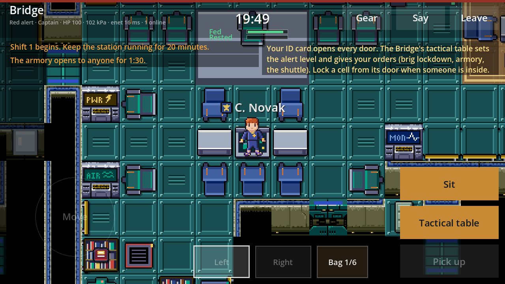
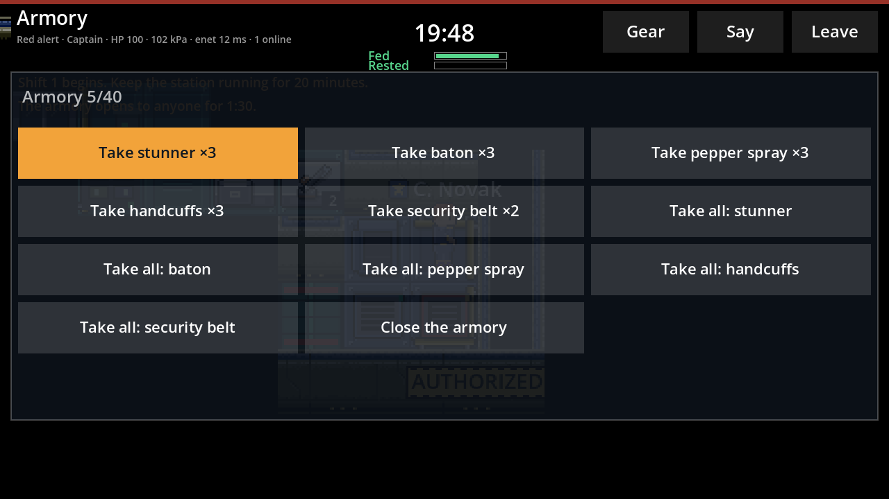
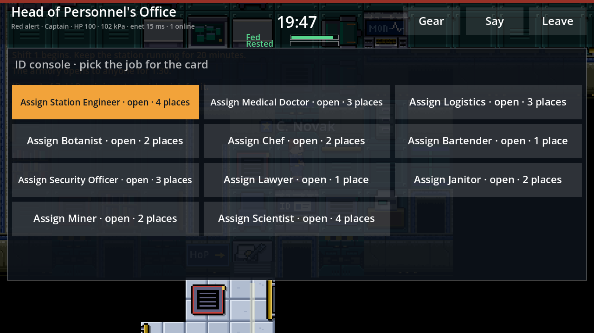
Medicine: treatment, chemistry and surgery
The Medical Doctor is the one job of the medical wing, and treatment, surgery and chemistry are its areas. Harm is kept in four kinds: brute, burn, toxin and oxygen damage; health is the maximum less their sum. The health analyzer lists the four in numbers to whoever scans; the crew monitor names only the worst kind, and only from vitals sensors up. A bandage, a burn ointment, an antitoxin pill and an epinephrine pen each take their own kind down (a layman only half as much).
The Chemistry room's dispenser and pill press, a solid machine that needs the room's power. Carry the reagents a recipe needs (Base, Acid and Salt: the shift's stock lies on the Chemistry racks, Stores sells more) and tap Chemistry beside it: one list of the recipes, 4 seconds each. Antitoxin is Base and Salt, burn ointment Acid and Base, an epinephrine pen or a flu antiviral Acid and Salt, morphine all three.
Service jobs, drinks and emergency lighting
The Chaplain's blessing (Comfort, or Pray on yourself) and service (in the Chapel) make a crew member Comforted: the word shows under the tiredness bar, and the hunger and tiredness meters fall a quarter slower for 3 minutes (5 minutes for someone hurt or down, 4 minutes after a service). It is a small kindness and nothing else.
Drinks: three of the bar's strong drinks (the soft ones never count) within 4 minutes make a player tipsy for 1 minute (a minute and a half at most). Tipsy is light and harmless: one step in ten goes sideways instead, and the screen sways a little; no blackout, no damage, nothing lost. The main menu's Reduce motion switch turns the sway of the screen off; the sideways steps are a rule of the game and stay.
Emergency lighting: a room that loses power keeps a dim red-orange emergency light for 2 minutes, from a small cell of its own, so a cut cable still makes the room dim at once but not black: 30 percent of the lost light stays. Doors, vents and consoles stay dead. When the power comes back there is a relay's click and the light returns to normal.


Robots
Only a Scientist builds robots, at the Robotics room's fabricator, from hull plates: a medibot (2 plates), a constructionbot (3), an electricianbot (2) or a securibot (3). The station may have 6 robots. Each walks one tile in 0.4 s, works by itself and is slower and clumsier than a person. Every shift starts with a fleet in the Robotics room (a medibot, a constructionbot, an electricianbot and a securibot); a robot lost to wear is replaced by a Scientist.
The medibot goes to the most hurt reachable player under 70 health whose suit sensors show their vitals or position (with the sensors off, only one a medibot sees for itself, within a few steps in a clear line) and heals them by 15 points of damage a visit (6 seconds). It keeps away from a patient a Medical Doctor is standing over. It wakes the unconscious, but never revives the dead.
The constructionbot walks to a hull breach or a cracked wall that has stood for 30 seconds and closes it (15 seconds of work) with one of its own 4 plates. Out of plates it goes to refill at the Robotics bay or the Air Works rack, and its menu says so.
The electricianbot lays a cable that has been cut for 30 seconds again (10 seconds) where the station's own layout had one and nothing hides it. It also walks to a feeder breaker that tripped on an overload and closes it once the cause is gone, opening any door that has lost its power on the way.
A Watch Officer or command card marks a player wanted, or clears the mark, on the Wanted list of a camera console in the Bridge or the Watch Office, wherever that player is. The securibot walks to a player marked wanted and, if they stand beside it for 3 seconds, handcuffs them with one of its own 2 pairs. Then it pulls the prisoner along to a free Holding cell, locks the cell door for 3 minutes and leaves; the cell door gives the cuffs back to the robot when it lets the prisoner go. With no cell free it waits with the prisoner at Holding. The Watch takes over at any time by pulling or uncuffing the prisoner. The mark goes with the cuffs. With no one to arrest it patrols the Holding entrance, the halls, the Stores counter, the Station Master's door and the main airlock, waiting 8 seconds at each (5 in a Swell, 2 in a Gale); it stops when switched off or flat.
A robot's battery lasts 8 jobs, then it stands where it is, red-eyed, until someone sets it right with a screwdriver in the active hand (8 seconds, half for the Scientist). Anyone beside a robot can switch it off or on. A robot with 2 points of battery or less, or worn (damaged), walks back by itself to the Robotics bay beside the fabricator and charges there (a point every 10 s). The constructionbot, electricianbot and securibot wear a little on every job; a Fix takes 50 of the 100 points of wear off, and a robot worn out is gone for good. The Scientist's console and Robotics bench list the robots, their batteries and wear. A robot opens only the doors its own card opens: the medibot a Medical Doctor's, the constructionbot and the electricianbot a Station Engineer's, the securibot a Watch Officer's, and every robot the Scientist's (the Robotics room). It plans its way through those doors alone, and a job it has no way to reach shows No route on its menu. The constructionbot and the electricianbot pry open a bolted or sealed door on their route, a timed work like an Engineer's crowbar (the menu says Prying a door open), but never one outside the areas their card opens, and the securibot never pries. Robots are airtight machines that work in vacuum and cold, so a breach in a depressurised crawlway is patched from the next tile like any other. The menu line beside Stop and Start says what the robot is doing now: Patrolling, Tending a name, Patching a breach in a room, Charging, Out of plates.
The Robotics room's robot fabricator, a solid machine that needs the room's power. A Scientist carrying hull plates taps Robot fabricator beside it (nobody else gets the button): one list of the four robots (Medibot, Constructionbot, Electricianbot, Securibot) with the plates each costs (2, 3, 2, 3), 20 seconds of work (half for the Scientist). The robot is put down beside the machine; the station may have 6. Robots work by themselves.
Research: prototype, field trial and release
A project is a need, a plan, a sample, two runs, an analysis, a review stamp, a prototype, a field trial and a release (about 12 minutes in all; one release a shift is the target). The projects are Servo sets (20 points), Pressure gasket (30 points), Splint lattice (30 points), Culture swab (40 points), Sensor board (45 points), Haul drone (50 points), Shielded visor (60 points). A refuted finding closes its branch for a small reward and builds nothing.
The prototype is built by a Scientist at the Robotics bench from parts bought at the supply console (hull plates, copper bars, reagents): servo set (plate, copper bar), pressure gasket (servo set, sealing gasket), splint (plate, base reagent), culture swab (salt and base reagents), sensor board (copper bar, salt reagent, plate), haul drone (servo set, plate), shielded visor (sensor board, plate, sealing gasket); the sealing gasket is a plate and a base reagent. It takes 1 minute. The bench may arc and shock whoever works it, which also makes the prototype worse.
The field trial is the first real use of the prototype, by the department that asked: the Engineer patches a breach with the gasket, the Medical Doctor treats someone with the splint or operates with the swab, the Engineer fits the board or welds in the visor, Storekeeper sends a crate with the drone, the Scientist fits the servo set. The prototype may fail (more often for a partly confirmed finding): the project goes back to the plan with notes and the next runs are a little better. Either way the user gets a Trial report; a Scientist hands a held one in at the R&D console to release the project: the research points are paid, and the bench makes the item for everybody (75 percent of the points when the trial was not the requesting department's).
The four services also help the others: the ore assay grades raw iron or copper ore, and a rich grade gives the refinery one extra piece every second smelt of that ore (a fair grade every fourth); the material test names the three thinnest hull walls; the sample diagnosis makes the antiviral and the cold medicine work in 60 percent of the time and counts the sick; the crop trial gives one crop a better growth (125 percent as fast) or one more piece a harvest for the shift.
The research budget: the Directorate gives the station a grant at the start of the shift (100 points for ten crew, 2 more or less for each person), one pool for every Scientist, shown on the R&D console and the Robotics bench. Starting a project spends its start cost, shown on its button; a release pays back its points (a confirmed finding all of them, a partly confirmed one 60 percent, a refuted one 30 percent). An abandoned project returns 30 percent of its start cost, the first failed field trial 25 percent. With no points left no new project can be started. The pool also buys rare samples from Stores (an assay copper bar, a reagent set, a sea sample, an ice sample), which make the data 10 points better. Supply points stay Storekeeper' own.
Each map has its own research programme set by the Directorate: the shared topics above and five topics of the map's own, which the R&D console lists. A sample may be a reading, taken in 20 seconds at the programme's device (a relay test rack, a data terminal) by anybody, with no item.
The Robotics bench (a solid device, it needs the room's power; Heron has one in the Robotics room beside the robot fabricator). Tap Robotics bench: a Scientist with a project at its prototype stage builds the prototype from the things carried (1 minute) and the list makes parts and released items (15 seconds each). Only a Scientist works the bench. The bench's own risk is an electric arc that shocks whoever works it (insulated gloves spare it). Plates, copper bars and reagents are bought at the supply console.


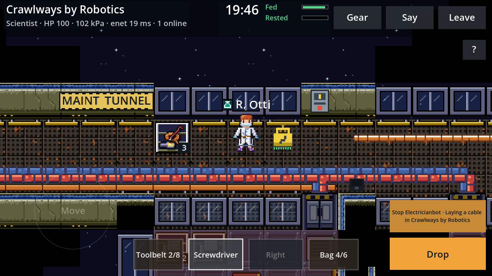
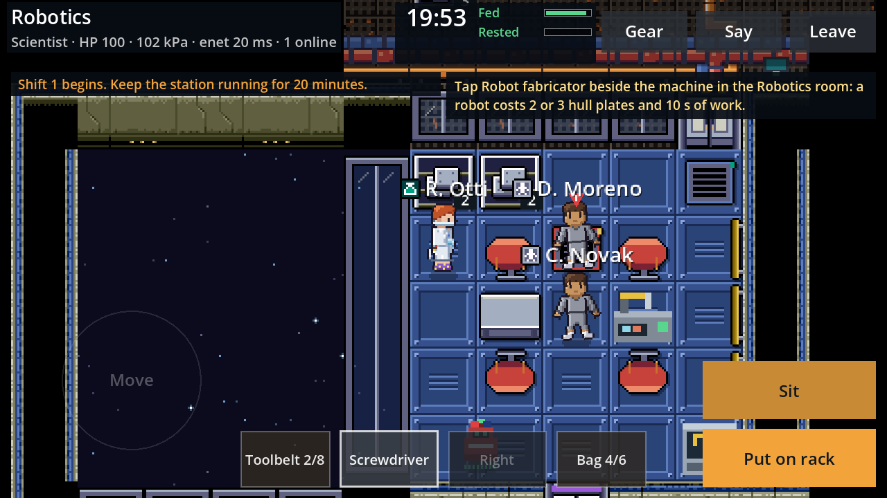
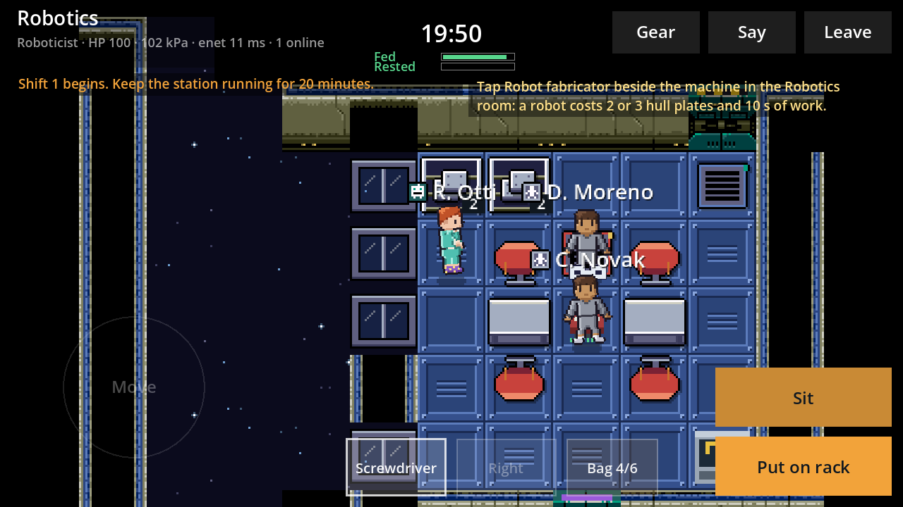

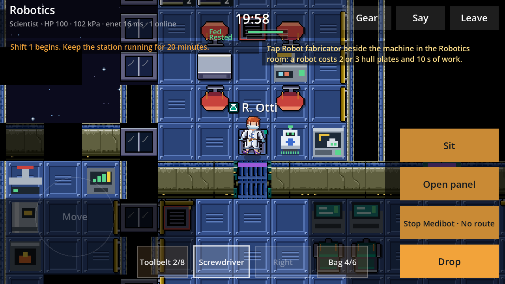
The waste line
Trash bins stand in the hub, the bar, the kitchen, the greenhouse, the Infirmary, the restroom, the Crew Quarters and the workshops. Hold anything that is trash and tap Put in bin: a bin takes 6 pieces, a full one drops the next on the floor. Cards, bags, crates and the gantry crane are not trash. Something put in by mistake is not lost at once: it sits in the bin for 60 s after the last piece went in, and anyone beside the bin can tap Take out of the bin, read what is inside (and 'Flushes in N s') and take any piece back into a free hand. The bin shows a small amber tag while it holds anything (red when full, blinking in the last ten seconds).
Vacuum pipes run over the ceilings from every bin to the collection chamber in the store room of Stores (the map does not draw them; the route is the shortest way over floor and doors, so routes share a trunk). Once a bin's 60 s are over, every 3 seconds the collector pulls one piece from it while its pipe is open, while its room has power. Each pull has a 8 percent chance to fail: the pipe on the way clogs (65 percent of failures) or bursts, the waste stays in its bin and every bin behind that pipe is cut off. At most 3 pipes are shut at once.
The Caretaker clears a clog with the plunger (tap Clear clog, 3 seconds, half that for the Caretaker); a Station Engineer mends a burst with a wrench in the active hand and a pipe part in the other (tap Mend pipe, 5 seconds; pipe parts are turned at the lathe).
The recycler breaks one piece of waste down every 6 seconds, while its room has power: metal is pressed into a hull plate, glass is melted into a glass pane, and plastic becomes pellets that go onto the delivery pad.
Ship the pad at the order console and the pellets are sold; the plates and panes lie beside the recycler for whoever needs them. Waste to plates and glass: that is the loop.
A trash bin, a small bin on a floor tile you can walk over. Hold anything you want to throw away and tap Put in bin: it holds 6 pieces, and a full one drops the next onto the floor. Cards, bags, crates and the gantry crane are not trash. The vacuum pulls the waste to the collector. A small light on the bin is green while its pipe is open and red when a clog or a burst cuts it off from the collector. Waste sits in the bin for 60 s after the last piece (an amber tag shows it holds something): tap Take out of the bin to read the list and take a piece back.
The collection chamber of the waste line (docs/DISPOSAL.md), a solid drum in the store room of Stores (the disposal outlet) that needs the room's power. The vacuum pipes from every trash bin end in it: every 3 seconds it pulls one piece of waste from each bin whose pipe is open, up to 24 pieces. Its gauge shows how full it is; the recycler beside it empties it. Nobody works it by hand; tap Waste collector beside it for what it is.
The recycler of the waste line, a solid press in the store room of Stores that needs the room's power. It breaks down one piece of waste from the collection chamber every 6 seconds: metal (tools, plates, cells, tanks) is pressed into a hull plate, glass (bulbs, goggles, syringes, bottles, glass shards) is melted into a glass pane, and everything else becomes plastic pellets that go onto the delivery pad to be sold. Its light is green while it works, amber when idle and red when there is no free floor beside it for its output.
The conveyor belt (a row of floor tiles with moving arrows) carries what lies on it one tile a second, while the room has power, from the recycler to the refinery. Metal scrap at its end falls into the refinery's hopper by itself, so the Stores Technician or the Miner needs only tap Smelt ore. Anything else that reaches the end waits there. People walk across it freely; it does not move them.
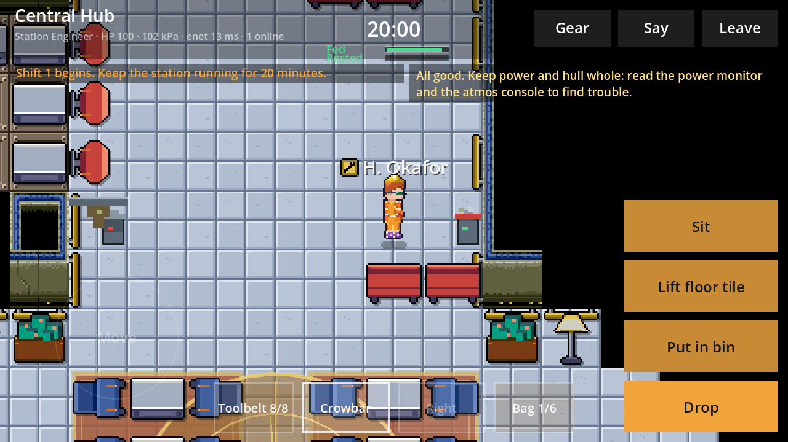


Watch cameras
Watch cameras hang in the hub, the transit tubes, the departments' doors and the stores areas. A camera sees up to 7 tiles ahead in a widening cone that no wall or closed door hides, while its room has power.
The cameras are read at a camera console in the Bridge and in the Watch Office, with the Station Master's, the Registrar's or a Watch Officer's ID card.
Pick a camera from the list: the console says who is in its picture (name, job, where, whether down or dead), up to 16 people, and rings them on the map.
The same consoles keep the Wanted list, for a Watch Officer's or a command ID card: one row for every crew member, wherever they are, with Mark wanted or Clear wanted. A marked player wears a red mark over the head on the phones of the Watch and command, and a securibot goes for them.
Each camera also keeps the last 90 seconds of who it saw where. At a Watch Office's console pick a camera and tap Read this camera's last 90 s (a job of 5 seconds): the log says, for each stay, "Person in a Caretaker's jumpsuit at the Stores Counter, 2:15 ago". It gives a job, a place and a time, and a name only where an ID card was in view. Print the log to hand it to the Advocate.
When an AI joins the crew (#25) the cameras will be its eyes; nothing of that is built yet.
A security camera, hung over a floor tile and looking the way its lens points. It sees up to 7 tiles ahead in a widening cone, what no wall or closed door hides, while its room has power; its red light blinks. It shows only on the camera console.
A camera console (a solid device that needs its room's power), in the Bridge and in the Watch Office. Only someone whose ID card is the Station Master's, the Registrar's or a Watch Officer's reads it. Stand beside it and tap Camera console: a list of the station's cameras; pick one and the list shows whether it is live, who is in its picture (name, job, where, whether down or dead) and the map rings them. A camera in a room without power shows no signal. A Watch Officer's or a command ID card also finds the Wanted list beside it: one row for every crew member, wherever they are, with Mark wanted or Clear wanted, while the console's room has power.

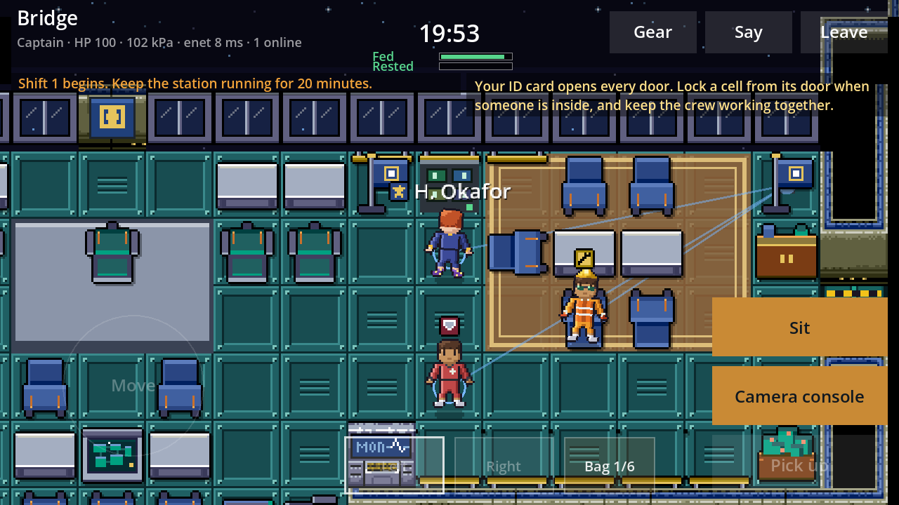
Traces and the match list
Harm and forcing leave traces nobody can see: a baton hit leaves blood, a taser a fibre from its tether, pepper spray a residue, cuffing, a cut cable, a broken thing, a locked closet's contents taken or a forged paper a fingerprint (gloves leave none), a forced door a fibre. Each trace carries who left it and fades in about four minutes (a residue after 150 seconds); a mop's stroke, the Caretaker's wipe or three people standing about it clears it.
The forensic scanner (one in the armory closet of the Watch Office) lifts the traces round a tile and prints a Trace slip: what, where, how old and a pattern code. A slip never names anyone. Take it to a Watch Office's console.
The Watch takes prints (a job of 8 seconds) from someone cuffed, down or who tapped Offer my prints (it holds for 60 seconds): a Print card with their four codes and their name. At the Records console enter the slip and the card, Run the match, and print the Match slip: match (with the card's name) or no match. A match is one kind of evidence; a hearing for a serious offence (Class 3) needs two kinds, such as a trace and a camera line.
The Advocate asks for the log and the slips: hold a petition and the other paper and tap Clip the other paper to this one; whoever reads the petition reads them too.
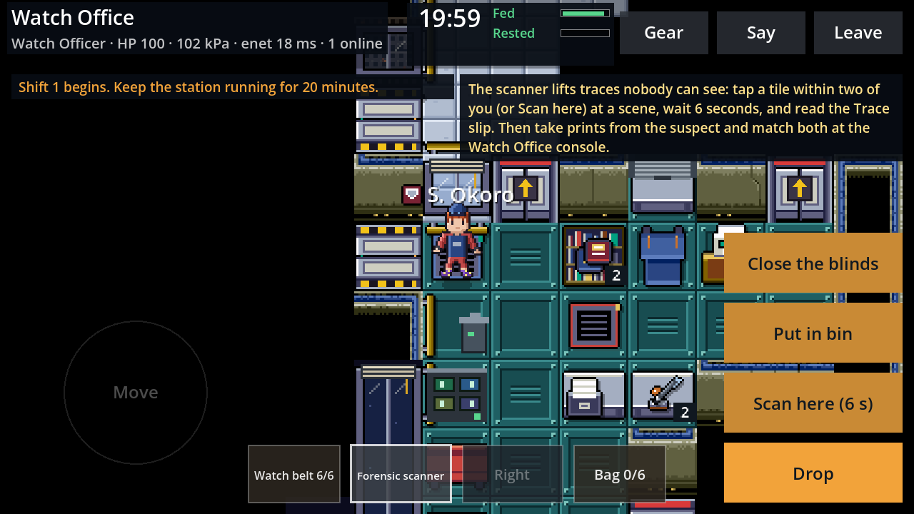


Hacking doors
A door has no bolt button. Behind its maintenance panel are 5 wires, each a different colour; bolting a door, testing its light or opening it without a card is done by working on them. Stand next to the door, hold a screwdriver and tap Open panel (Close panel to shut it again); it takes 2 s, 1 s for a Station Engineer, and no access is needed. An open panel shows on the door. Then tap Door wires to list the wires by colour, each with what it does and whether it is cut, and tap a wire to use the tool in your active hand on it, at once.
- Wirecutters cut an intact wire.
- A cable coil mends a cut one.
- A multitool pulses an intact wire; it does something to bolts, bolt light and opening only.
| Wire | If cut | If pulsed |
|---|---|---|
| Power | The Door Is Dead: It Does Not Open, Bolt Or Seal, And A Crowbar Forces It Open Unless It Is Bolted. | Nothing. |
| Bolts | The Bolts Stay As They Are: A Bolted Door Cannot Be Unbolted And A Free One Cannot Be Bolted. | Bolts A Door With Power, Or Unbolts It. A Door Someone Stands In Cannot Be Bolted. |
| Bolt Light | The Bolt Indicator Stays Dark, Bolted Or Not. | Toggles The Test Light, Which Shows The Bolt Indicator Whether Or Not The Door Is Bolted. |
| Opening | The Door Does Not Open For Anyone, Access Or Not; A Crowbar Forces It Open. | Opens A Closed Door With Power At Once, Whatever Access It Asks For. |
| Safety | The Pressure Lock Is Off: The Door Never Seals, And One That Was Sealed Opens. | Nothing. |
Which colour is which changes from door to door and from shift to shift, and only someone at the open panel sees them. The colours are red, blue, green, yellow, white.
Tables, racks, closets, cabinets and seats
Things do not only lie on the floor. Furniture blocks the way, so walk round it.
- Table: Blocks the way. Things lie on it: stand beside it and Put on table what you hold, and Pick up from it as from the floor. Tables also make the reception desks (a counter with a seat for the clerk on one side and the public on the other), a long dining table and low tables in the lounges. The reception desks are service windows: a glass partition with a roll shutter in each window. The shutter is open while someone sits in the seat behind it and shuts when nobody does; whoever works the desk can also open and shut it by hand (Open shutter, Close shutter). A shut shutter keeps the public from putting things on the counter, taking things from it or reaching across it.
- Rack: A shelf against the wall for tools and supplies. Blocks the way and works like a table: Put on rack, Pick up.
- Closet: Blocks the way and holds 40 slots of 8 like things out of sight. Stand beside it and Open closet to see its contents as a list, one row per kind with how many: tap a row to take one, Put in puts what you hold in (Put in all adds the same kind from your other hand and backpack). Only you see inside, and it closes when you walk away. A locked closet has a light, red for an ID card that does not open it; it opens only for a card, worn or in the hand in use, with the access it asks for. Hide inside, a row of the open closet's list, shuts you in, out of everyone's sight, until you get out or somebody opens it.
- Bench: A bench to sit on, in the hub and the common room of the quarters. Stand beside it and tap Sit: you sit down on it, strapped in. Nothing lies on it, and nobody walks onto it without sitting.
- Seat: A chair, a stool, a console seat or a toilet seat in its stall, with straps; or lying furniture, a bed in the Crew Quarters or the operating table. Stand beside a seat and tap Sit: you move onto it and sit, strapped in, facing the way the seat faces. A bed is no seat: step onto an empty one (it is walked over like floor) and tap Sleep, or tap Lie down at the operating table. One seat holds one person. Tap Get up, or take a free step, to get up.
- Planting tray: A planting tray in the greenhouse. Stand beside it with a seed in your active hand and tap Plant; a young plant shows in it, then a ripe one after 2 minutes to 6 minutes depending on the crop, and Harvest picks it. It keeps its own water, nutrients, weeds and health: tap Check tray for the line, and Water, Fertilize, Weed and Treat to care for it. Dry soil, weeds and spots show on it. Blocks the way.
- Stove: A cooking station in the kitchen. Put ingredients on it like on a table, then tap Cook (pick a dish from the list, 6 to 12 seconds, half of that for the Chef): the ingredients are used up and the dish lands on the stove. The recipes: harvest hash (protein block and potatoes and onions), protein skillet (protein block and beans), vegetable stew (carrots and potatoes and onions), corn chowder (corn cobs and potatoes and onions), tomato pilaf (rice and tomatoes), rice bowl (rice and beans), bean stew (beans and tomatoes), mushroom pan (mushrooms and onions), potato soup (potatoes and onions), fried potato strips (2 potatoes), fruit compote (apples and beet sugar), tomato soup (2 tomatoes), flatbread (2 wheat), carrot salad (2 carrots), onion broth (2 onions) and baked potato (potatoes). Blocks the way.
- Bar mixer: The bar's mixing machine. Put the ingredients on it and tap Mix (3 seconds, half of that for the Bartender) with a clean glass in your hand: the drink fills it, and sugar lands on the mixer. Its recipes: tomato fizz (tomatoes), malt tea (wheat) and beet sugar (sugar beets). Its chiller also fills the ice bucket (Refill the ice bucket). Blocks the way.
- Cabinet: A flat cupboard set in a wall between two rooms, with a handle and a small window. It works like a closet (holds 40 slots of 8 like things; Open cabinet, tap a row to take one, Put in puts what you hold in) but it can be opened from both sides of the wall, so one room stocks it and the other takes from it. A lock on it, a light that is red for a card that does not open it, asks for a card of the access it names, or any one of several.
- Prop: Scenery and fittings: potted plants (they stand against a wall, in a corner, at a window or in a row; the planters and floor lamps, and the flags, are things you can move, not scenery), bookshelves (which take books and the law books back), a lectern, flags and a fax machine in the Advocate's Chambers. Some fittings are used: the surgery's instrument tray and anaesthesia stand take small things like a rack, wash basins (the surgery's and the restroom's sinks) wash hands, the Morgue's drawers open (Open drawer: the tray slides out; Place body on tray lays a dead body on it, Help someone in lays an unconscious one, Hide inside shuts you in yourself, Close drawer shuts it; Take body out lays whoever is in it on the floor beside you) and its autopsy table takes a body (Lay body on table) and gives whoever tapped Autopsy a private report. It blocks the way; walk round it (the map keeps every door and room reachable). The crawlways have no scenery: every fitting there is a rack, a locker or a storage crate with things in it. Floor decals (rugs, carpets, the hub's floor inlay, the platform of the Station Master's chair, the operating theatre's sterile floor, caution stripes at a tunnel door) are only paint.
- Storage crate: A heavy steel-banded crate, fixed to the floor, in the crawlways. It works like a closet (holds 40 slots of 8 like things; Open crate, tap a row to take one, Put in puts what you hold in, Close the crate) and is never locked. Only you see inside, and it closes when you walk away. Each tunnel pocket has one to three racks, lockers and crates with different things in them: flashlights, candles, fire extinguishers, budget gloves, books, cable coils, plates and tools. A candle put into a crate goes out.
- Lathe: The Machine Workshop's lathe. Put plates on it (Put on lathe, each plate lying on it counts), tap it, choose a part: a battery cell (3 plates, 20 seconds), a inverter module (2 plates, 15 seconds), a copper wire (1 plate, 8 seconds), a solar panel (4 plates, 24 seconds), a bolts (1 plate, 5 seconds), a pipe (2 plates, 6 seconds), a valve kit (3 plates, 10 seconds), a pump kit (4 plates, 14 seconds), a vent kit (2 plates, 8 seconds), a scrubber kit (2 plates, 8 seconds), a rotor bearing (2 plates, 15 seconds), a rotor seal (1 plate, 10 seconds) or a rotor brush (1 plate, 5 seconds). After the work the part lies on the lathe, to pick up; the plates it needed are used up. Plates are the raw metal for now (the Miner will bring ore later). It blocks the way.
- Winding bench: The winding bench, in the Electrical Workshop (on Millrace Station in the Transformer Room). The transformer's core, lifted out and set down here by the crane, is rewound here with a spool of copper wire (Rewind, 40 seconds). Blocks the way.
Seats are chairs, stools, console seats and benches: the bridge's console seats, the chairs and benches of the hub and the kitchen counter's stools, the infirmary's and the stores' desks, and the strap seats of the crew's departure vehicle (Heron's shuttle, Millrace's sub, Cairn's plane). None are in the crawlways.
Stand beside a seat and tap Sit, or stand on a free seat and tap Sit (it comes after the buttons of the tool in your hand and of the consoles in reach). You move onto its tile and sit, strapped in, in the seat's direction; everyone who sees you sees you seated. Sitting takes no time and nothing stops your work. A strapped person stays put, and on a station without gravity they do not float. One seat holds one person.
To get up just walk in any direction that is free (the Stand button does the same and puts you back where you were). A seat nobody sits on is walked over like floor, so chairs never block a room; only a seat somebody sits on blocks the way.
Locked closets and cabinets on this station: the Bridge (command access), the EVA Airlock (engineering access), the Station Master's Berth (command access), the Registrar's Berth (command access), the Infirmary (medical access), the Infirmary (medical access), the Construction Workshop (engineering access), the Kitchen (kitchen or botanics access), the Armory (all areas access), the Stores Bay (stores access), the Cell 3 (watch access), the Cell 1 (watch access) and the Cell 2 (watch access). Every other closet opens for anyone.
Consoles
Nothing on your screen tells how the station is doing: the station announces trouble on the radio, and the rest is read at its consoles. Stand next to one to see it live. Like every console, it works only while its room has power; without power it is dark.
- Crew monitor (MON, in the Infirmary): every suit that reports, with as much as its owner set the sensors to tell (alive or dead, health, where).
- Power monitor (PWR, in the Transformer Room): the arrays, the sun and the time to the next shadow, the battery bank, the load, and which rooms have power and why the others do not.
- Atmos console (AIR, in the Air Works): every room with an air alarm, the worst first, with what is wrong: a hull breach, less than 80 kPa of air on average, bad air (O2, CO2, ember gas, temperature) or vents stopped for want of power; tap a room for its card. Any Station Engineer sends a room Panic or Normal from here, or Panic all red rooms. While there is a room in trouble, the console flashes red on the map, so the alarm is seen from afar. Rooms switched off at their panels are only noted; they set off none.
Supply
The station starts every shift with 40 supply points. The order console (ORD, in the Stores Counter; it needs stores access) shows how many are left, on its face too, so whoever sees it knows; the request console (REQ, in the Stores Entrance) is open to everyone and shows no points. Like every console, each works only while its room has power; without power it is dark.
- Request: anyone at the request console can request an item. The request waits in the order console's list (up to 5 at once), and Storekeeper hears about it on the headset. The request console shows what became of your requests: approved and on its way, landed on the pad, or denied.
- Approve: approving a request at the order console spends its cost and takes 6 s of work (3 s for Storekeeper). The order lands on the delivery pad (PAD) 40 s later, 20 s when Storekeeper approved it, one order at a time. It stays marked for whoever asked until someone picks it up, or until they leave or can no longer be revived; they and Storekeeper hear when it lands. If they leave or can no longer be revived before it lands, it goes back and its cost is refunded, and Storekeeper hears of it.
- Deny or withdraw: whoever asked can withdraw their request at the request console at once. Anyone else with stores access, at the order console, can deny it, which takes 3 s of work (1.5 s for Storekeeper); whoever asked and Storekeeper hear who denied it. A request also leaves the list when whoever asked has been gone from the shift for 3 minutes, or died and can no longer be revived.
- Export: Ship the pad at the order console sends away the goods on the pad: a crate brings 5 points, an empty gas cylinder brings 2 points, plastic pellets brings 1 points. The station's own things stay, tools and paperwork included, and so do deliveries nobody has picked up yet. 6 crates wait in the storage of the Stores Bay.
- Paperwork: every approved order prints an order form at the order console. Stamp it with the stores stamp (Storekeeper carries one, and another lies in the Stores Counter) and file it in the filing cabinet (FIL, in the Stores Counter): 2 points.
| Order | Cost |
|---|---|
| Hull plate | 5 points |
| First aid kit | 5 points |
| Air tank | 5 points |
| Cable coil | 3 points |
| Protein block | 4 points |
| Wheat seeds | 2 points |
| Tomato seeds | 2 points |
| Bean seeds | 2 points |
| Potato seeds | 2 points |
| Rice seeds | 2 points |
| Corn seeds | 2 points |
| Carrot seeds | 2 points |
| Onion seeds | 2 points |
| Apple seeds | 2 points |
| Mushroom spores | 2 points |
| Beet seeds | 2 points |
| Fertilizer sack | 3 points |
| Plant spray | 2 points |
| Paper ream | 2 points |
| Base reagent | 2 points |
| Acid reagent | 2 points |
| Salt reagent | 2 points |
| Oxygen cylinder | 10 points |
| Nitrogen cylinder | 10 points |
| Copper bar | 4 points |
| Fuel drum | 8 points |
| Frozen rations | 5 points |
| Orchard juice | 2 points |
| Sweet syrup | 2 points |
| Amber ferment | 2 points |
| Bitters | 2 points |
| Orbit white | 3 points |
| Trench dark | 3 points |
| Brine tonic | 2 points |
| Pressure soda | 2 points |
| Emergency cell | 6 points |
Work that takes time
Stand still until the bar is full: a step, switching hands or using the belt stops the work.
| Work | Takes | Faster for |
|---|---|---|
| Cut a cable | at once | — |
| Force a door open | 4 s | Storekeeper: 2 s |
| Cut the hull open | 6 s | — |
| Patch a breach | 6 s | Station Engineer: 3 s |
| Treat someone | 4 s | Medical Doctor: 2 s |
| Revive someone | 6 s | Medical Doctor: 3 s |
| Take something out of the backpack | 1 s | — |
| Approve a supply order | 6 s | Storekeeper: 3 s |
| Stamp an order form | 1 s | — |
| Deny a supply request | 3 s | Storekeeper: 1.5 s |
| Open or close a door's panel | 2 s | Station Engineer: 1 s |
| Lift a floor tile | 2 s | Station Engineer: 1 s |
| Strip a hull wall's plating | 4 s | Station Engineer: 2 s |
| Plant a seed | 2 s | Botanist: 1 s |
| Harvest a plant | 3 s | Botanist: 1.5 s |
| Cook a dish | 5 s | Chef: 2.5 s |
| Mix a drink | 3 s | Bartender: 1.5 s |
| Eat or drink | 3 s | — |
| Scan someone | 2 s | — |
| Read a book | 60 s | — |
| Shake a cocktail | 3.5 s | Bartender: 1.8 s |
| Turn a battery cell | 20 s | — |
| Turn an inverter module | 15 s | — |
| Turn copper wire | 8 s | — |
| Turn a solar panel | 24 s | — |
| Turn bolts | 5 s | — |
| Turn a pipe | 6 s | — |
| Turn a valve kit | 10 s | — |
| Turn a pump kit | 14 s | — |
| Turn a vent kit | 8 s | — |
| Turn a scrubber kit | 8 s | — |
| Wrench a pipe loose or tight | 3 s | Station Engineer: 1.5 s |
| Lay a pipe | 4 s | Station Engineer: 2 s |
| Cut a pipe | 2 s | Station Engineer: 1 s |
| Reset a charge controller | 3 s | — |
| Clear a controller's vents | 8 s | — |
| Tighten a controller's terminals | 6 s | — |
| Cut a battery cell out | 3 s | — |
| Bring a battery cell back | 3 s | — |
| Swap a battery cell | 8 s | — |
| Swap an inverter module | 8 s | — |
| Trace a failing load | 5 s | — |
| Lift the transformer core | 10 s | — |
| Lower the transformer core | 10 s | — |
| Set the core on the winding bench | 5 s | — |
| Take the core off the bench | 5 s | — |
| Rewind the core | 40 s | — |
| Refill an air tank | 6 s | — |
| Clean a solar panel | 8 s | — |
| Replace a solar panel | 20 s | — |
| Tighten an array's bolts | 8 s | — |
| Grease an array's joint | 8 s | — |
| Wash your hands | 5 s | — |
| Reinforce a worn hull wall | 4 s | Station Engineer: 2 s |
| Water a tray | 3 s | Botanist: 1.5 s |
| Fill a watering can | 3 s | Botanist: 1.5 s |
| Fertilize a tray | 4 s | Botanist: 2 s |
| Pull the weeds of a tray | 4 s | Botanist: 2 s |
| Treat a sick plant | 5 s | Botanist: 2.5 s |
| Use the compost bin | 3 s | Botanist: 1.5 s |
| Cuff someone | 3 s | — |
| Take someone's handcuffs off | 2 s | — |
| Fill a bucket | 4 s | Caretaker: 2 s |
| Mop a puddle | 2 s | Caretaker: 1 s |
| Replace a lightbulb | 3 s | Caretaker: 1.5 s |
| Drill ore from the asteroid | 4 s | Miner: 2 s |
| Smelt ore | 6 s | Miner: 3 s |
| Listen to someone | 3 s | Medical Doctor: 1.5 s |
| Brush a turbine rotor | 10 s | — |
| Put a new bearing in a rotor | 20 s | — |
| Put a new seal in a rotor | 20 s | — |
| Re-sheath a field cable | 15 s | — |
| Turn a rotor bearing | 15 s | — |
| Turn a rotor seal | 10 s | — |
| Turn a rotor brush | 5 s | — |
| Ride to another deck | the connector's time: 2 s on stairs, 3 s on a ladder, 3 s a deck on a lift | — |
| Make a medicine at the Chemistry dispenser | 4 s | — |
| Operate on a patient | 20 s | — |
| Build a robot | 20 s | — |
| Set a robot right | 8 s | — |
| Mend a burst waste pipe | 5 s | — |
| Clear a clogged waste pipe | 3 s | — |
| Run an experiment | 45 s | — |
| Review the literature | 45 s | — |
| Analyse the data sheets | 30 s | — |
| Do a service for a department | 20 s | — |
| Repair a ruptured bench or vessel | 5 s | — |
| Do a repeat the Referee asked for | 75 s | — |
| Take a reading at a research device | 20 s | — |
| Build a part or an item at the Robotics bench | 15 s | — |
| Build a prototype at the Robotics bench | 60 s | — |
| Clear a jammed bilge pump | 6 s | — |
| Conduct a service in the Chapel | 15 s | — |
| Thaw a frozen heating pipe | 8 s | — |
| Mend a burst heating pipe | 5 s | — |
| Chip the rime off a wind turbine | 8 s | — |
| Flush the geothermal heat exchanger | 10 s | — |
| Pour a fuel drum into the genset's tank | 6 s | — |
| Bleed a radiator | 4 s | — |
| Tighten a radiator's valve | 6 s | — |
| Pour a fuel drum into the boiler's tank | 6 s | — |
| Rewarm a patient in the bath | 60 s | — |
| Warm someone up | 8 s | — |
| Scan a scene for traces | 6 s | — |
| Take someone's prints | 8 s | — |
| Read a camera's log | 5 s | — |
| Wipe the floor of traces | 3 s | — |
| Shovel a drift off the sled lane | 6 s | — |
| Inspect a crate for a seal | 6 s | — |
| Clip a manifest to a crate | 4 s | — |
| Take a snow core | 8 s | — |
| Drill the ice | 10 s | — |
| Chip an ice block | 6 s | — |
| Take a seabed sample | 8 s | — |
| Harvest the kelp bed | 8 s | — |
| Wash a glass | 2 s | — |
| Freeze ice | 8 s | — |
| Mend a window | 6 s | — |
| Load a patch into a robot | 8 s | — |
| Flash a robot's firmware again | 20 s | — |
| Promote a Hand at the ID console | 8 s | — |
| Run the dredge winch | 8 s | — |
Lost connection
If the app drops out (a call, the phone locked), your body sleeps where it stood for 3 minutes. Open the app again and you are back in it.